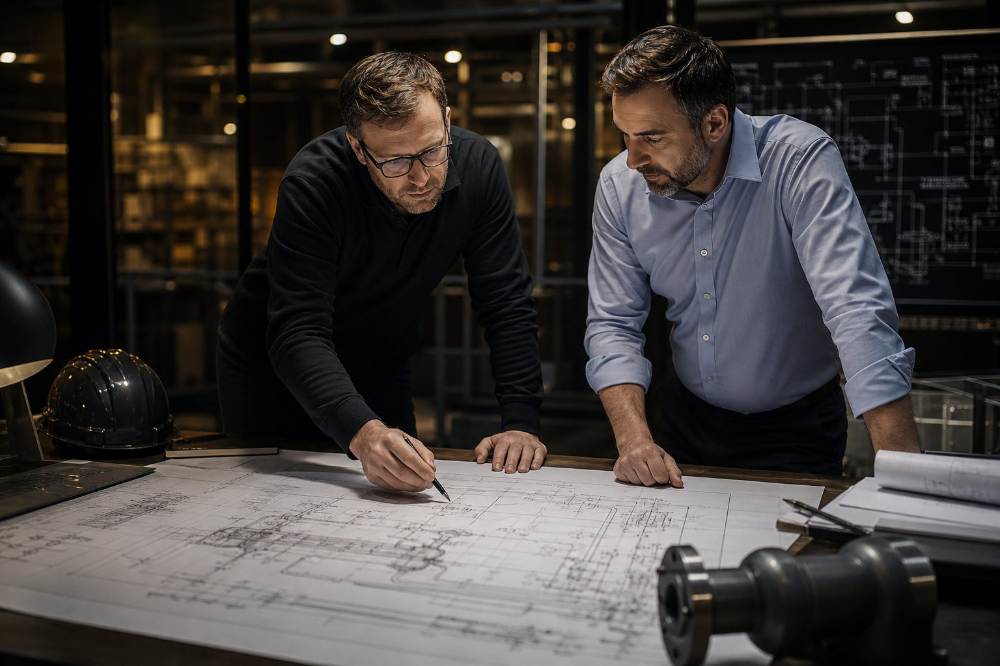
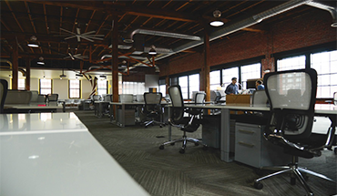
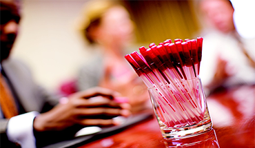

Sevgili Dostlar,
Bu sene şirketimizin kuruluşunun 15. yılını kutladık. 2003 yılında bazı dostlarımızın teşvikiyle bu işe başladığımızda, önce birkaç kalem malzeme ile başlayalım ama bildiğimiz alandan çıkmayalım diye karar aldık.
Bildiğimiz alan derken neyi kastediyoruz? Bu alan içinde yıllarımızı geçirdiğimiz, gördüğümüz, duyduğumuz, okuduğumuz, ilgilendiğimiz, siz dostlarımızı bulduğumuz bir alan; adeta bir camia. Altyapı boru hatları ve altyapı yatırımları. Öyle bir alan ki dünyanın her tarafında ırk, dil, din, renk farkı ne olursa olsun bu alana girdiğinde aynı lisanı konuşuyor, aynı şeyleri hissediyor, birbirine yakınlaşıyor. Bu alanda herkes kendine bir rol ediniyor. Kimi kazıyor, kimi kaynaklıyor, kimi naklediyor, kimi çiziyor, kimi imal ediyor, kimi satıyor, kimi araştırıyor…
Biz yirmi dört yıldır bu alanda bize en uygun rolü yerine getirmeye çalışıyoruz. Bir yandan en iyi ürün ve hizmeti nasıl sağlarız, müşterilerimize en iyi şartlarla nasıl sunarız, onların işlerini daha da iyi yapmaları için kolaylıkları nasıl buluruz, onlara en iyi avantajı nasıl sağlarız diye araştırıyor, yatırımlar yapıyoruz. Yapmaya da devam edeceğiz.
BİZ BİLİYORUZ, SİZİN BAŞARINIZ BİZİM BAŞARIMIZ…
Saygılarımızla,
Murat Süataç / Mak. Y. Müh.
Şirket Müdürü